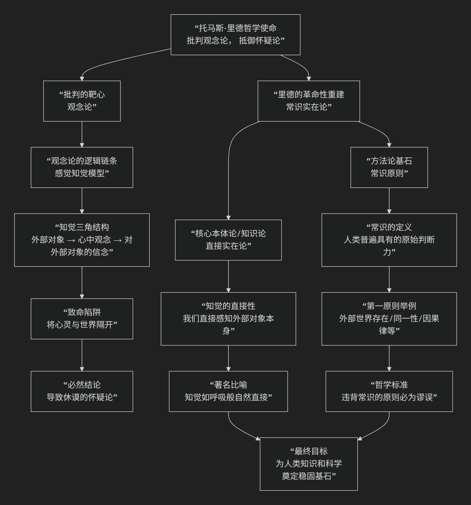

Steven Pinker
根据史蒂芬·平克（Steven Pinker）的心智与语言哲学核心思想。
史蒂芬·平克是当代最具影响力的认知科学家和科普作家之一。他的核心思想可概括为：以进化心理学和计算理论为基础，捍卫和普及了一种关于心智与语言的“综合式”科学观点——即人类心智是一个由自然选择塑造的、由进化适应模块组成的复杂系统，而语言则是这个系统中一个卓越的“本能”。
平克的思想是乔姆斯基语言学、福多式心智模块论和现代进化生物学的综合与大众化。其核心框架与主张，可以通过下图清晰地概览：

以下，我们将沿此逻辑脉络，深入解析其核心要义。
一、核心思想三大支柱
1. 心智计算理论
这是平克所有思想的基础模型，直接继承自福多和认知科学的主流范式。
核心隐喻：心智是一台由自然选择设计的计算机。
核心主张：思维的本质是 “信息处理” ，即大脑（硬件）运行特定的 “计算程序” （软件）来处理心理表征。意识、情感、决策等都是复杂计算过程的表现。
反驳目标：这一理论直接反对三种传统错误观念：
“空白石板”：认为心智没有先天结构。
“高贵野蛮人”：认为人性本善，是社会腐蚀了它。
“机械幽灵”：认为有一个非物质的“自我”在控制大脑。
2. 语言本能论
这是平克最著名的观点，在其代表作《语言本能》中系统阐述。
核心命题：语言不是文化的发明，而是人类与生俱来的生物本能，就像蜘蛛结网、海狸筑坝一样。
关键证据：
普遍性与创造性：所有人类社群都有复杂语言，儿童能在贫乏输入下快速、无错地掌握。
关键期：语言学习能力随年龄增长而衰减，这是生物本能的典型特征。
神经特异性：布洛卡区、韦尼克区等专门脑区。
基因基础：如FOXP2基因的发现。
机制阐述：他普及并发展了乔姆斯基的“普遍语法”思想，将其阐释为一种 “组合性的心智语法” 。儿童大脑天生配备了一套抽象的语法规则参数，只需在环境中触发即可设置。
反驳目标：行为主义的“模仿-强化”说，以及后来联结主义的“统计学习万能论”。平克认为，统计模式识别不足以解释语言的无限创造性和儿童习得的速度与一致性。
3. 心智模块性与进化心理学
这是平克将语言本能论推广到整个心智领域的框架，主要体现在《心智探奇》等著作中。
核心观点：人类心智不是一个通用目的的问题解决器，而是一个 “适应工具箱” ，里面装满了为应对祖先环境中反复出现的生存问题（如择偶、合作、识别欺骗、理解物理世界）而进化出的 “专门化模块” 。
模块特征：这些心智模块是 领域特异性 的（如语言模块只管语言，直觉物理模块只管物体运动）、信息封装 的（处理过程自动、快速、不受意识信念干扰）、功能主义 的（其设计是为了解决特定适应问题）。
语言的位置：语言模块是这工具箱中一个功能强大的“瑞士军刀”，它本身也是一个由句法、音韵、词法等子模块构成的复杂系统。
二、哲学立场与批判对象
平克是一位坚定的 科学现实主义者和自然主义者。
哲学根基：他坚信人性、心智、文化等现象都可以且必须通过 进化生物学和认知科学 的透镜来理解。
主要批判对象：
标准社会科学模型：认为心智是空白石板，人性完全由文化塑造。
极端文化决定论和后现代主义：否认生物性和普遍人性的存在，认为一切都是社会建构。
“魂牵梦萦的三大谬误”：他在《白板》一书中系统批判了“空白石板”、“高贵野蛮人”和“机械幽灵”这三大阻碍科学理解人性的观念。
三、与乔姆斯基和福多的关系
对乔姆斯基：平克是乔姆斯基 “天赋论”和“普遍语法” 思想最有力的普及者和捍卫者。但他更强调语言的 “适应功能” （即语言因沟通的进化优势而被选择），而乔姆斯基本人对此持更谨慎或怀疑的态度（认为语言可能是其他认知能力进化的副产品）。
对福多：他全盘接受了福多的 “心智模块性” 和 “计算理论” ，并为其填充了海量的进化心理学证据。但他比福多更乐观地认为，进化心理学可以研究包括中心系统（如推理、动机）在内的更广泛的心智模块。
四、总结与影响
平克的核心贡献在于，他将乔姆斯基的语言学、福多的心灵哲学和威廉姆斯等人的进化生物学，整合成一个连贯、通俗且极具说服力的宏大叙事，用以解释“人性是什么”这一根本问题。
他的思想精髓是：
> 人类心智是一套由自然选择设计的复杂计算系统，语言是其中一项卓越的进化适应本能。理解心智，就是理解这些计算程序在进化史上的“为何”与“如何”。
尽管他的观点（特别是关于进化心理学的具体假设）在学术界存在争议，但他成功地将关于语言和心智的严肃科学讨论推向了公众领域，并极大地塑造了当代人对自身本性的科学认知。他的工作标志着一种以进化与计算为基础的、综合性的人性科学的强势崛起。